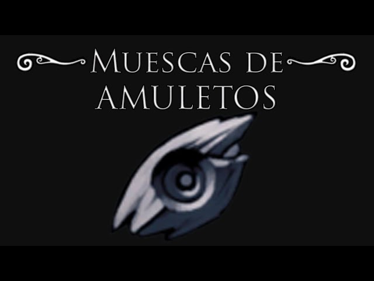
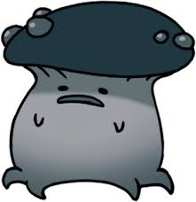
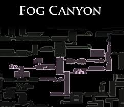

Muescas de Amuletos

¿Qué son las Muescas?
Las Muescas son ranuras de memoria en el inventario del Caballero. Cada amuleto en Hallownest tiene un costo específico de muescas (desde 1 hasta 4). Al inicio del juego, solo posees 3 muescas, lo que limita enormemente tus opciones de combate. Expandir esta capacidad es fundamental para poder realizar las combinaciones de amuletos más poderosas.
Capacidad Máxima
En total, puedes obtener hasta 8 muescas adicionales para alcanzar un máximo de 11 muescas permanentes (sin contar la mecánica de sobrecarga).
Ubicación de Todas las Muescas
Salubra, en los Cruces Olvidados, vende muescas a medida que coleccionas amuletos:
| Muesca | Requisito | Precio (Geo) |
|---|---|---|
| 1ra Muesca Extra | Tener 5 Amuletos | 120 |
| 2da Muesca Extra | Tener 10 Amuletos | 500 |
| 3ra Muesca Extra | Tener 18 Amuletos | 900 |
| 4ta Muesca Extra | Tener 25 Amuletos | 1400 |
Páramos Fúngicos
Derrota a los dos Ogros Shrumal (hongos gigantes que lanzan explosivos) cerca de la estación de la Reina.

Cañón Nublado
Se encuentra en una zona secreta llena de burbujas explosivas, justo encima de la habitación de Cornifer.

Coliseo de los Tontos
Obtenida como recompensa al completar la primera prueba: La Prueba del Guerrero.
Compañía de Grimm
Se obtiene al derrotar al Maestro Grimm (la primera fase) en el escenario principal.
Gestión de Espacio
Administrar tus muescas es el verdadero desafío táctico. Aquí tienes algunos ejemplos de costos para planificar tu "build":